86旧版人物thread公版✓ 判官过审一个倔老头和他的理想国：孟子传
🎬 有一个人，周游列国，逢人就怼，开口谈仁义，闭口谈性善。诸侯都嫌他迂腐，但他至死不悔——这个人叫孟子。
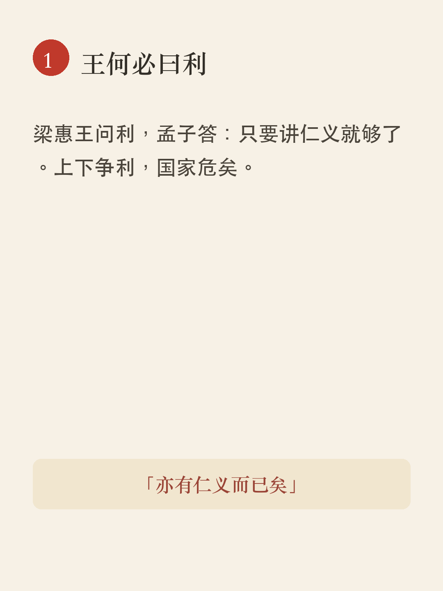
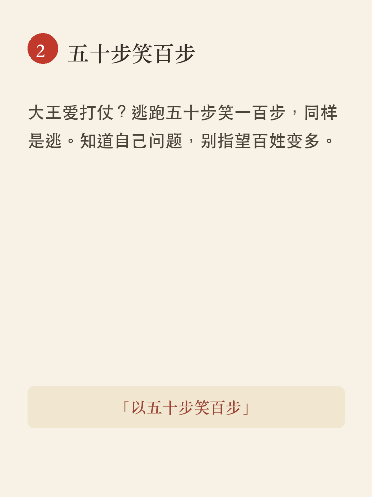
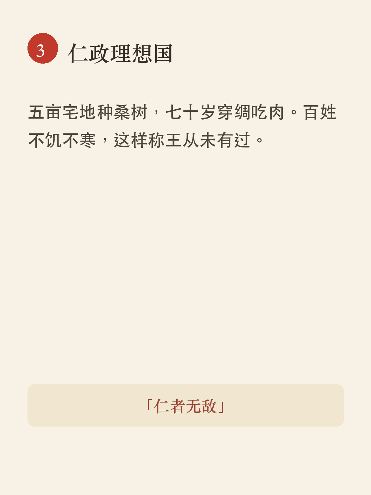
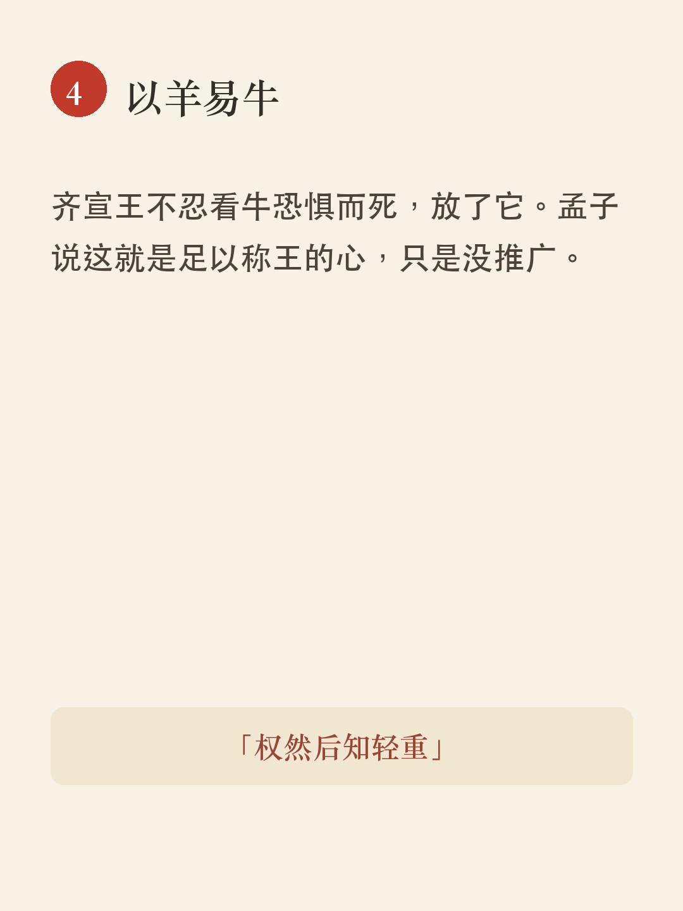
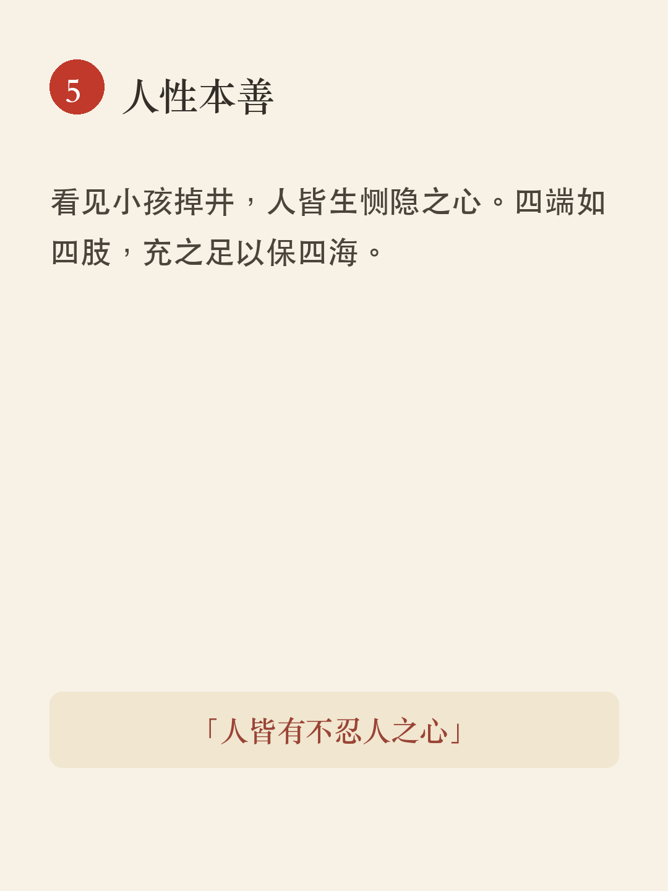
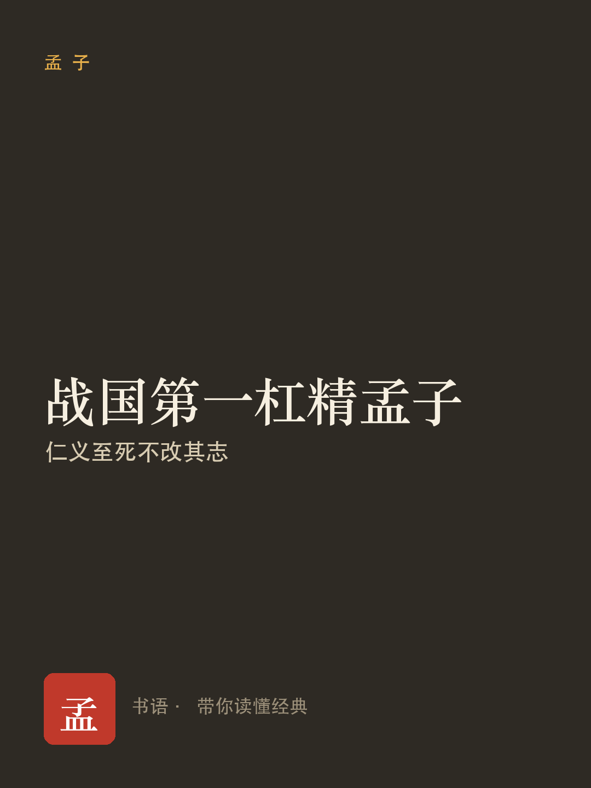
📄 配文·钩子（不剧透）
孟子，战国第一倔老头。周游列国，见国君就讲仁政，碰一鼻子灰也不回头。他告诉梁惠王别谈利，告诉齐宣王推恩可以保四海。他相信人性本善，仁义之道就在每个人心里。这个倔老头用一生证明：理想主义不是不知道自己改变不了世界，而恰恰是知道改变不了，还要去做。口播稿全文
有一个人，周游列国，锋利直谏，善以辩论折服诸侯，开口谈仁义，闭口谈性善。不少诸侯嫌其迂直，虽多称善而行之者少，他仍不改其志——这个人叫孟子。
公元前372年到公元前289年，战国乱世里出了这么个倔老头。他从梁惠王开始，一路怼到齐宣王、滕文公，见一个国君就讲仁政，碰一鼻子灰也不回头。
梁惠王问他：“老先生不远千里而来，能给我国带来什么好处？”孟子张口就是一句：“王何必曰利？亦有仁义而已矣。”——大王您何必谈利呢？只要讲仁义就够了。您说“如何利吾国”，大夫说“如何利吾家”，士人百姓都说“如何利吾身”，上下都争利，国家就危险了。万乘之国弑君的，必然是千乘之家；千乘之国弑君的，必然是百乘之家。为什么？因为大家把利放在义前面，不抢光不满足。
梁惠王不服气，说我对自己的国家够尽心了，邻国政策不如我用心，可我的百姓也没变多啊。孟子打了个比方：“王好战，请以战喻。填然鼓之，兵刃既接，弃甲曳兵而走。或百步而后止，或五十步而后止。以五十步笑百步，则何如？”——大王喜欢打仗，我用战争打比方。敲鼓进攻，兵器交接，有人丢下盔甲拖着兵器逃跑，有的跑了一百步，有的跑了五十步，用五十步笑一百步，怎么样？梁惠王说不可，只是没跑到一百步罢了，同样是逃跑。孟子说，大王您知道这个道理，就别指望百姓比邻国多了。然后他画出了那张理想国的蓝图：五亩宅地种桑树，五十岁的人能穿丝绸；鸡狗猪好好养，七十岁的人能吃肉；百亩农田不误农时，数口之家能吃饱饭；认真办学校，教孝顺悌义，头发花白的老人不用再扛东西赶路。七十岁的人穿绸吃肉，百姓不饿不寒，这样还不能称王，从来没有过。
梁惠王又问他东败于齐、长子死难、西丧地于秦七百里、南受辱于楚的耻辱怎么洗。孟子说“地方百里而可以王”，只要行仁政，省刑罚，薄税敛，深耕易耨，让年轻人用空闲时间修孝悌忠信，在家侍奉父兄，出外尊敬长上，“可使制梃以挞秦楚之坚甲利兵矣”。秦楚夺了百姓农时，让他们不能耕种养活父母，百姓陷于水深火热，大王去征伐，谁能与大王为敌？“故曰：仁者无敌。王请勿疑！”
齐宣王问他齐桓晋文的事，孟子说仲尼的徒弟不讲那些，“无以，则王乎？”——不说那些了，不如讲称王天下的道理吧。齐宣王问怎样才能保民称王，孟子说可以。宣王问他怎么知道自己可以，孟子讲了一个故事：听说大王坐在堂上，有人牵牛从堂下过，大王问牛去哪，回答说用来祭钟。大王说“舍之！吾不忍其觳觫，若无罪而就死地”，放了那头发抖的牛。孟子说这就是足以称王的心啊，百姓以为大王吝啬，其实是不忍心看见牛恐惧而死。“君子之于禽兽也，见其生，不忍见其死；闻其声，不忍食其肉。是以君子远庖厨也。”齐宣王听了“有戚戚焉”，心里被打动了。孟子趁机追问：现在恩惠足以施到禽兽，功德却达不到百姓，这是为什么？“今恩足以及禽兽，而功不至于百姓者，独何与？”然后他说出了那句千古名言：“权，然后知轻重；度，然后知长短。物皆然，心为甚。王请度之！”孟子用“以羊易牛”告诉齐宣王，仁政的种子就在你心里，只是没有推广开来。
滕文公为世子，将之楚，过宋而见孟子。他主张性善，常以尧舜为典范。滕文公问怎么治国，孟子对齐宣王说过“无恒产而有恒心者，惟士为能。若民，则无恒产，因无恒心。苟无恒心，放辟邪侈，无不为已。”——没有固定产业却有稳定心思的，只有士能做到。百姓如果没有稳定的心，就会放辟邪侈，什么事都干得出来。所以贤明的君主分给百姓产业，一定要让他们上能侍奉父母，下能养活妻子儿女，好年成一辈子吃饱，荒年也不至于饿死。“然后驱而之善，故民之从之也轻。”
公孙丑问孟子：你要是当上齐国的卿相，能推行大道，会不会动心？孟子说“否。我四十不动心。”他解释自己怎么做到不动心——“我知言，我善养吾浩然之气。”什么是浩然之气？孟子说“难言也。其为气也，至大至刚，以直养而无害，则塞于天地之间。其为气也配义与道；无是，馁也。是集义所生者，非义袭而取之也。”——浩然之气，最伟大最刚强，用正直去培养而不损害它，就能充满天地之间。这气必须配合义和道，没有义和道，它就疲软了。这气是长期积累义行而产生的，不是偶然行义就能获取的。有一件事心里不安，这气就疲软了。
他还说“人皆有不忍人之心”，看见小孩要掉进井里，任何人都会产生怵惕恻隐之心，这不是为了结交孩子父母，不是为了在乡里朋友间求名誉，只是因为看见那情景心里难受。“恻隐之心，仁之端也；羞恶之心，义之端也；辞让之心，礼之端也；是非之心，智之端也。”人有这四端，就像有四肢一样。有这四端却说自己做不到，那是自己害自己。“苟能充之，足以保四海；苟不充之，不足以事父母。”
孟子论曰“天时不如地利，地利不如人和”，“得道者多助，失道者寡助”。有人嫌他在齐国待太久，三宿才出昼，他说“夫出昼而王不予追也，予然后浩然有归志”。——我离开昼地，齐王不来追我，我这才浩然有了归去的志向。“予虽然，岂舍王哉？王由足用为善。王如用予，则岂徒齐民安，天下之民举安。”——我虽然如此，难道就舍弃大王吗？大王如果用我，岂只是齐国百姓安宁，天下百姓都会安宁。
这就是孟子。周游列国，从梁到齐，从齐到滕，诸侯听完都点头称善，转头该干嘛干嘛。多被君主称善但推行有限，亦曾在齐受任。但他不改其志。他从“人性本善”这个起点出发，一路推导出仁政、浩然之气。他告诉梁惠王不要谈利只要谈义，告诉齐宣王推恩可以保四海。他用“以羊易牛”让人看见仁心的种子，用“五十步笑百步”让人看见自己的自欺，用“缘木求鱼”让人看见霸道的虚妄。他至死不悔。不是因为他天真，而是因为他相信：人心本善，仁义之道就在每个人心里，只是需要有人去唤醒。
这个倔老头，用一生告诉我们——理想主义不是不知道自己改变不了世界，而恰恰是知道改变不了，还要去做。
83旧版映照scene公版✓ 判官过审你有多久没被骂"好为人师"了？孟子说这是病
🎬 孟子说，人之患在好为人师。这句话今天读，比任何成功学都扎心。
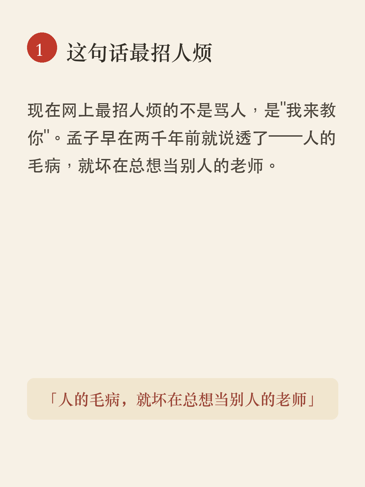
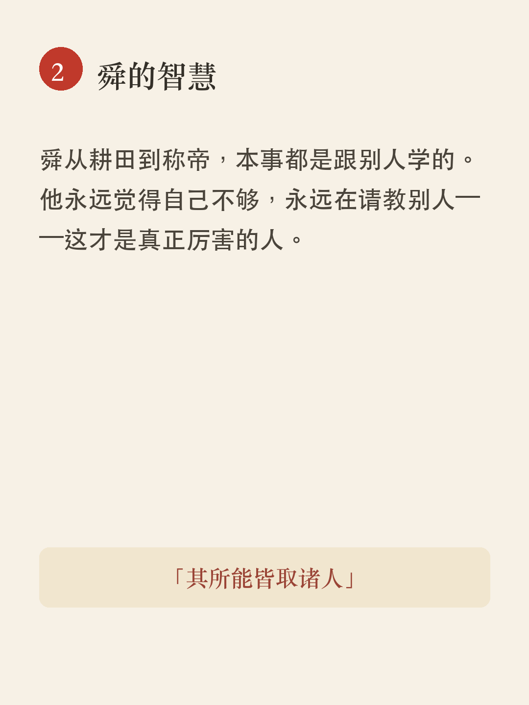
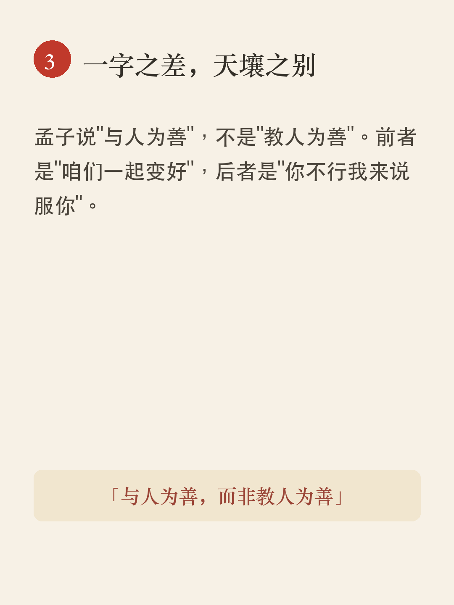
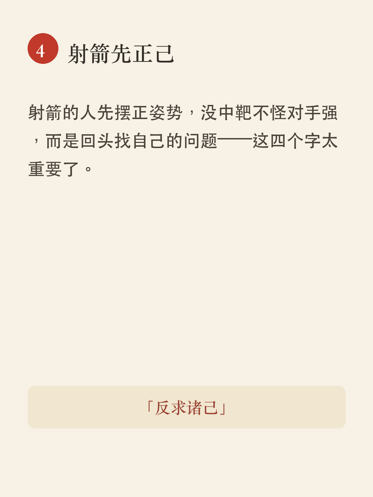
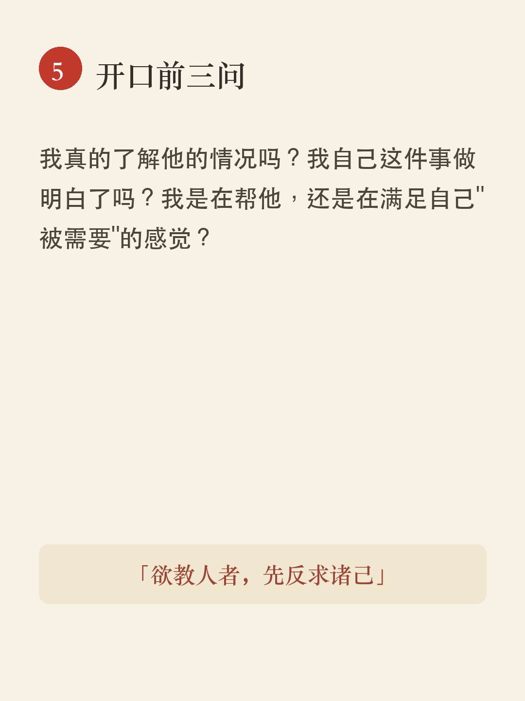
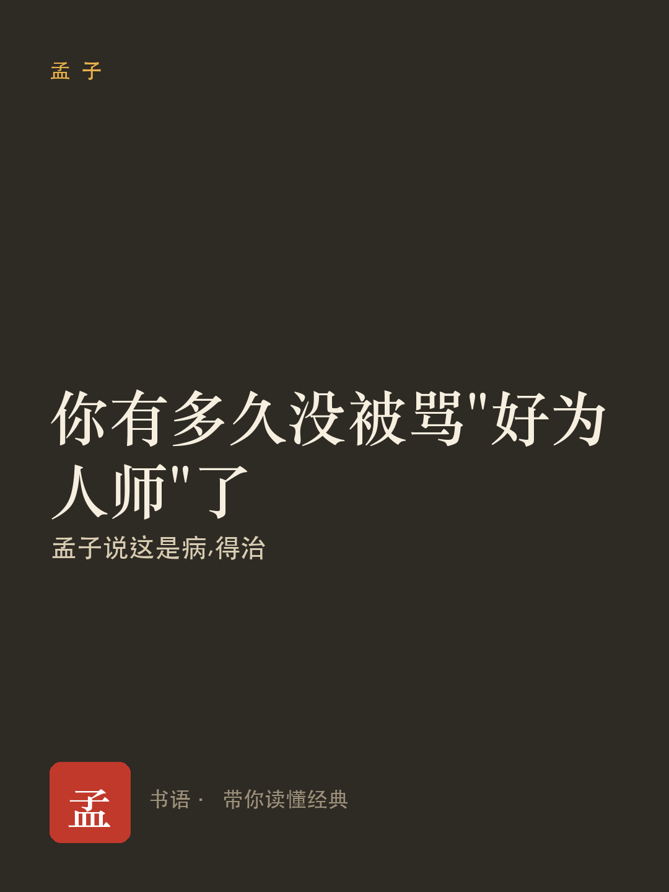
📄 配文·钩子（不剧透）
你有没有发现，现在最招人烦的话不是骂人，而是"我来教你"？
孟子两千年前就说透了——人的毛病，就坏在总想当别人的老师。舜那么厉害，他的本事全是跟别人学的，永远觉得自己还不够。
关键就在这一字之差："与人为善"，不是"教人为善"。
下次想开口教人之前，先问自己三个问题：你真的了解他吗？你自己搞明白了吗？你是在帮他，还是在满足"被需要"的感觉？
原来我们缺的，从来不是教人的机会，而是倾听的耐心，和承认自己也在路上的谦卑。口播稿全文
你有没有发现，现在网上最招人烦的一句话，不是骂人，不是阴阳怪气，而是——“我来教你”。
孟子早在两千多年前就说过一句话，扎心到什么程度？他说：人的毛病啊，就坏在总喜欢当别人的老师。
什么意思？人的毛病啊，就坏在总喜欢当别人的老师。
你想想自己有没有这样的时候——刷到一个新闻，啪一下就开始点评江山；朋友倒苦水，话还没说完，你"我懂我懂，你应该这样这样"；家庭群里转发养生文章，顺带@所有人"你们都看看"；职场新人犯了个错，老员工一拍桌子"这都不会？我来教你"。
好为人师这件事，我们每天都在犯，但很少有人意识到这是一种病。
那孟子为什么说这是"患"？他紧接着就讲了一个故事，把道理说透了。
他说，大舜这个人厉害吧？可是你看他是怎么成长的？舜于耕、稼、陶、渔诸事，皆取诸人。舜自耕稼、陶渔诸事以至为帝，其所能皆取诸人。
注意这个细节——舜不是觉得自己懂了就去教别人，而是永远觉得自己还不够，永远在向别人请教。
孟子说，君子最大的德行，就是**"与人为善"**——不是"教人为善"，是"与人为善"，是和别人一起变好。
你发现没有，这里有一个微妙的区别：好为人师的人，心里想的是"你不行，我来说服你"；而真正有智慧的人，心里想的是"我可能也不够，咱们一起看看怎么办"。
所以孟子说，射箭的人要先摆正自己的姿势，发射出去没中靶，不去怪对手比自己强，而是**"反求诸己"**——回过头来找自己的问题。
这四个字太重要了。你上一次跟人吵架，拼命证明自己是对的，对方是错的，吵完之后你有没有问过自己：我是不是也有哪里可以改进？
好为人师的人，永远在找别人的问题。反求诸己的人，永远在找自己的空间。
这不是让你自我否定，而是让你把精力从"纠正别人"收回来，用到"修正自己"上。
你发现没，那些真正厉害的人，往往很少主动教人。不是他们藏着不说，而是他们知道——**一个人愿意听你说话，不是因为你道理讲得对，而是因为你真的理解他的处境。**
下次你想开口"教"别人之前，先问自己三个问题：我真的了解他的情况吗？我自己这件事做明白了吗？我是在帮他，还是在满足自己"被需要"的感觉？
孟子那句话不是骂人，是一面镜子。
照一照，你会发现——原来我们缺的，从来不是教人的机会，而是倾听的耐心，和承认自己也在路上的谦卑。
80旧版映照scene公版✓ 判官过审为什么你总说"我不是好人"？孟子：你忘了
🎬 你有没有过这种经历——明明知道自己该怎么做，但就是做不到？孟子说，那不是因为你坏，而是因为你忘了自己本来是谁。
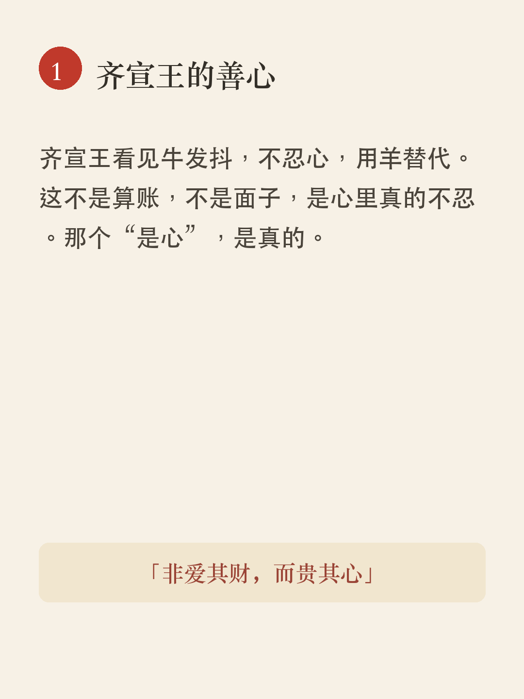
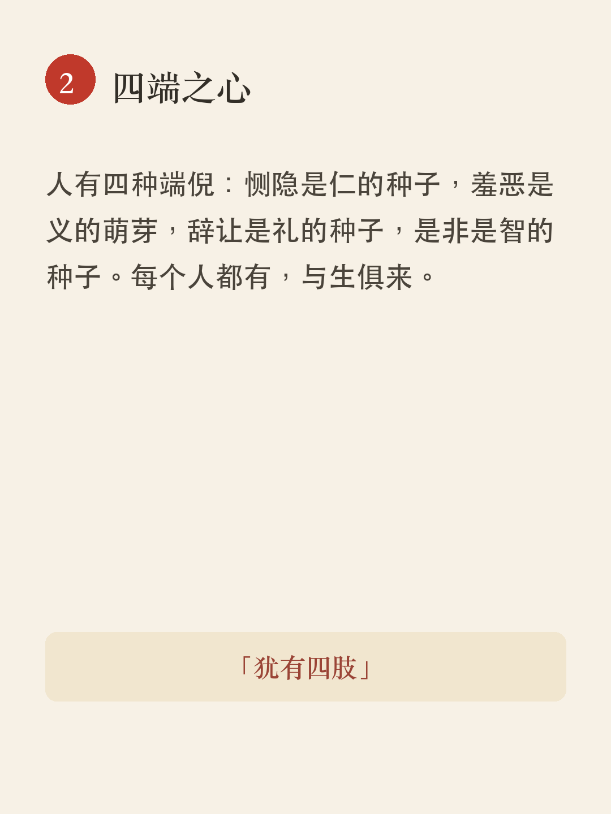
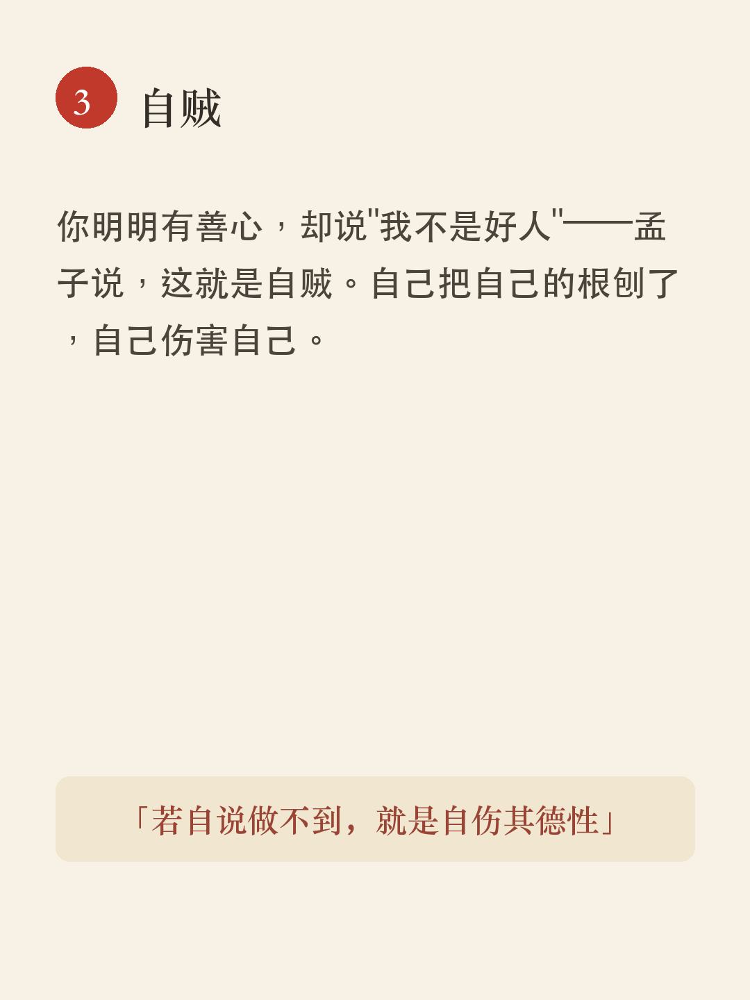
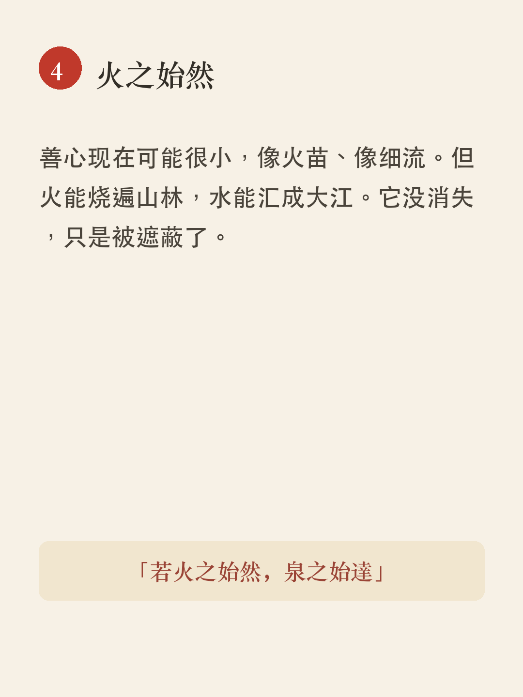
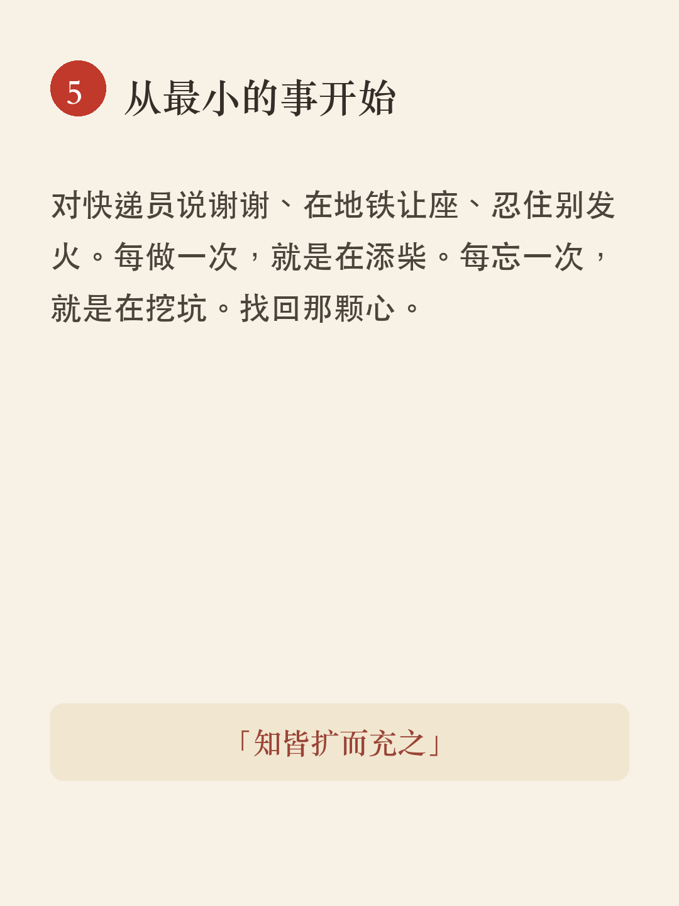
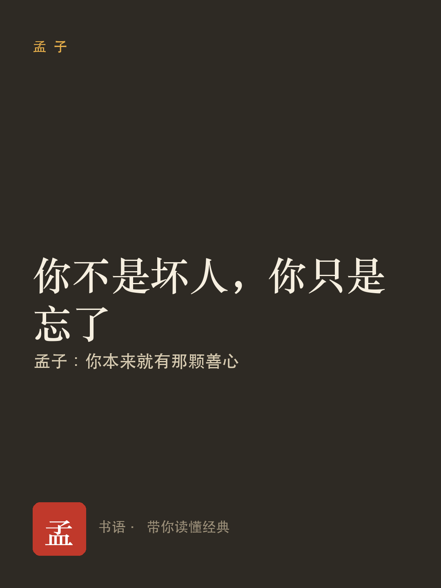
📄 配文·钩子（不剧透）
你有没有对自己说过"我不是好人"？孟子说：你不是做不到，你是忘了。
齐宣王看见牛发抖，心有不忍，那个瞬间的善心是真的。孟子说，人本来就有四端之心——恻隐、羞恶、辞让、是非，像有四肢一样自然。
但你老说自己做不到，孟子说这就是"自贼"——自己伤害自己。你把善心当不存在，就像捂住火苗说没有光。
其实善心从未消失，它只是被你说"算了"说习惯了，给压下去了。
你不是学坏了，你只是忘了。从今天起，对快递员说声谢谢，这就是在添柴。口播稿全文
你有没有过这种时刻——
明明知道自己该怎么做，但就是做不到。然后你对自己说：算了，我就是这样的人，我做不到，我不是好人。
停。
孟子跟你说：你不是做不到，你是忘了。
忘了什么？忘了你本来是谁。
《孟子》里有一个特别扎心的故事。齐宣王坐在堂上，看见有人牵牛从堂下过。他问：牛要去哪？回答说：要去祭钟。齐宣王说：放了吧，我不忍心看它发抖的样子，像个无辜的死刑犯。以羊易之。
你注意，齐宣王这个举动，他不是因为算账、不是因为爱面子、也不是为了让谁夸他。原文说他"非爱其财"，他就是心里真的不忍。那个瞬间，那个"是心"——那颗善心，是真的。
但孟子接着问他一句话，这句话后来成了千古名句：今恩足以及禽兽，而功不至于百姓者，独何与？
你能对一头牛发善心，却不能让百姓过上好日子，问题出在哪？不是你没有能力，是你没有推。你的善心就停在那头牛身上，没往前走一步。
而孟子在这段话之前，说了一句更根本的话。他说：人有这四端之心，就像有四肢一样自然。
什么是四端？就是四种端倪、四种开头。恻隐之心，仁之端也——你看到别人受苦，心里一紧，这是仁的种子。羞恶之心，义之端也——对不义会自然感到羞耻和厌恶，这是义的萌芽。辞让之心，礼之端也——你懂得谦让、懂得界限，这是礼的种子。是非之心，智之端也——你能分辨对错，这是智的种子。
孟子说，这四端，每个人都有，就像生下来就有手有脚一样自然。
那问题来了——你明明有，为什么老说自己做不到？
若自说做不到，就是自伤其德性。
什么叫自贼？就是自己伤害自己。你有四端的种子，却说"我不是好人""我做不到"——孟子说，这就是自己把自己的根给刨了。
你把善心当不存在，就像捂住火苗说这里没有光，就像堵住泉眼说地下没有水。
但孟子打了个比方：若火之始然，泉之始達。
火刚刚燃起来的时候，只是一点点火星，但它可以烧遍整片山林。泉水刚刚涌出来，只是一线细流，但它可以汇成大江大河。
你的善心，现在可能很小，可能被生活压着、被现实磨着，但它从来没有消失过。它只是被遗忘了，被遮蔽了，被你自己说"算了"说习惯了，给压下去了。
所以你总说"我不是好人"，孟子说：你忘了你本来是谁。你本来就有恻隐、有羞恶、有辞让、有是非。你不是天生缺德，你是忘了自己本来有那颗心。
怎么办？孟子说：知皆扩而充之矣。
知道它在那里，然后把它放大。一件一件，从最小的事开始：对快递员说声谢谢、在地铁上让个座、被人冒犯的时候先忍住别发火。
每做一次，就是在给那点火苗添柴。每忘一次，就是在给自己挖坑。
你不是学坏了，你只是忘了。
从今天起，把那颗心找回来。
80旧版映照scene公版✓ 判官过审齐宣王的"不忍之心"：你也有，只是你不敢用
🎬 齐宣王看见牛被杀前发抖，心有不忍，让人用羊换下来。孟子说：你看，你有不忍之心，你就能行仁政。很多人听完这话笑了——这算什么仁政？
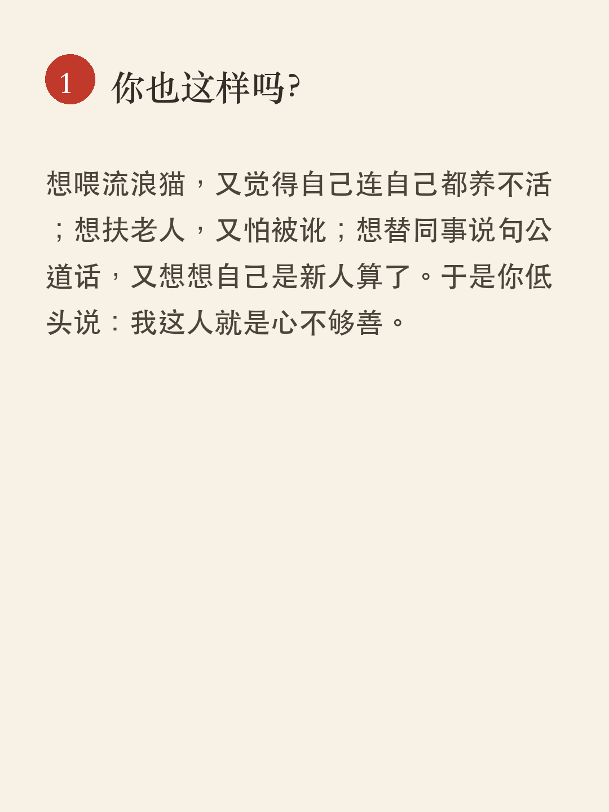
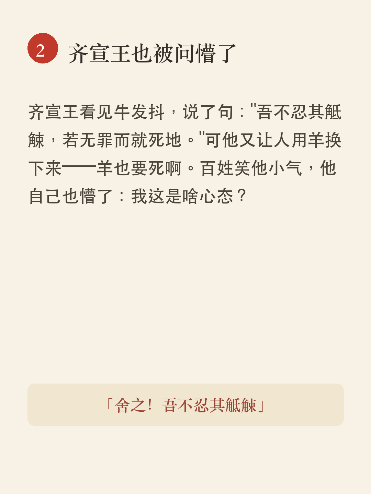
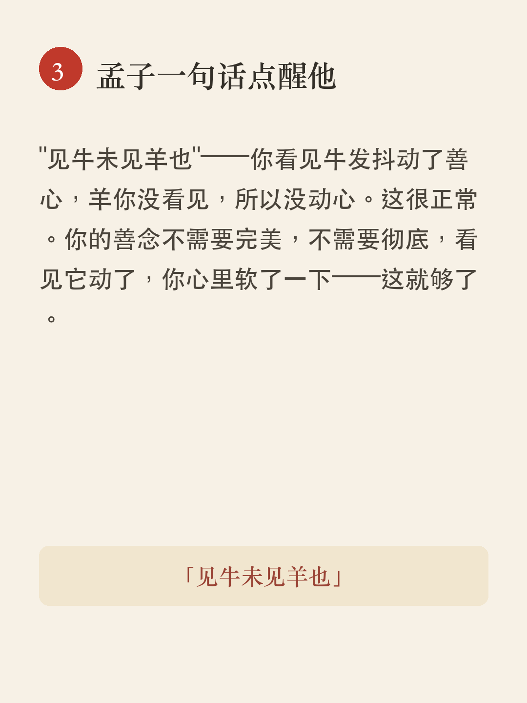
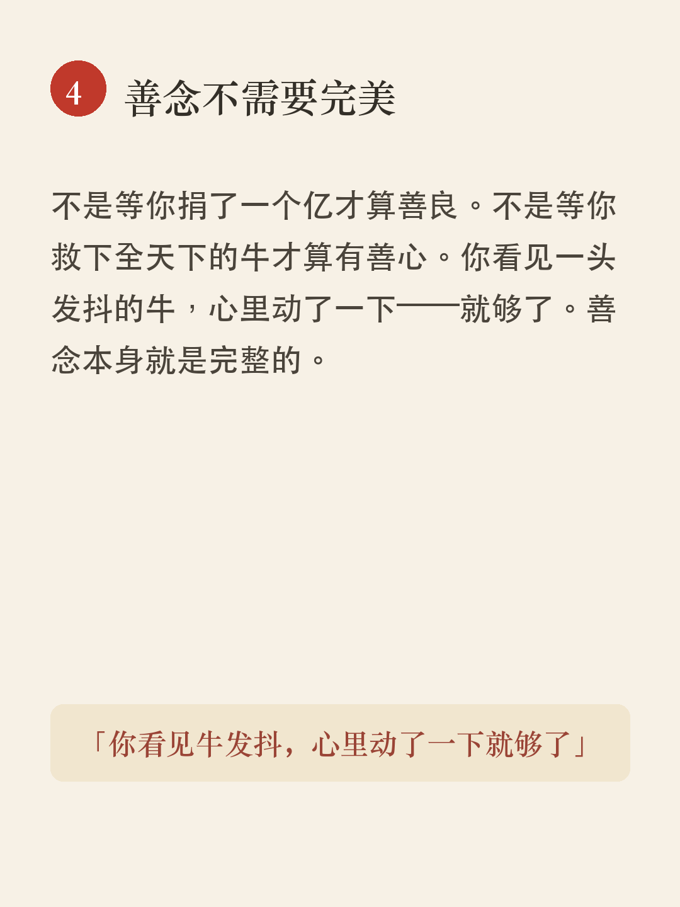
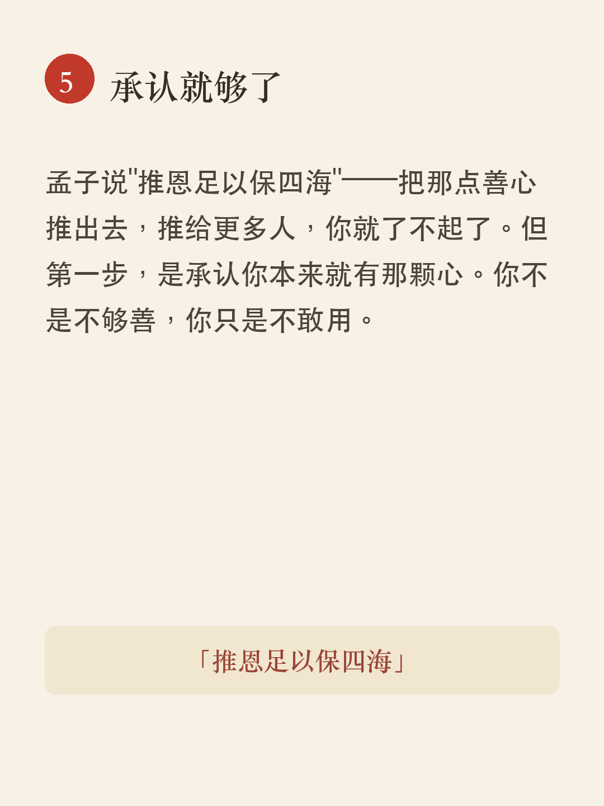
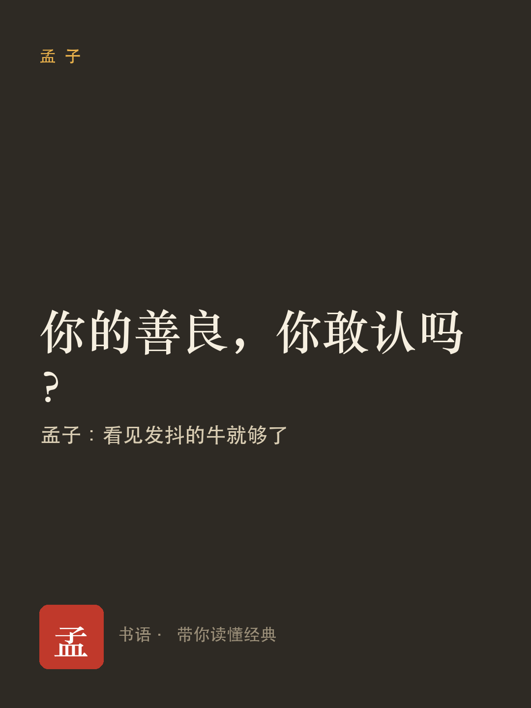
📄 配文·钩子（不剧透）
你有没有过这种感觉？看见流浪猫想喂没喂，看见老人摔倒想扶没扶，看见同事被欺负想帮没帮。然后你告诉自己：我就是不够善。
但孟子说——你错了。
齐宣王看见牛发抖，动了善心，连自己都搞不清这是什么心态。孟子说："见牛未见羊"，你没看见羊，所以没动心，这很正常。你的善念不需要完美，不需要彻底，看见它动了，你心里软了一下——就够了。
问题从来不是你"不够善"，是你不敢承认、不敢用它。
下次看见什么让你心软的东西，别急着否定自己。就停下来，承认一下：我心软了。然后你再决定要不要把这个心推出去。
你缺的从来不是善念。你缺的只是承认它的那一点勇气。口播稿全文
你有没有过这种感觉？
看见流浪猫在雨里发抖，想喂它，又觉得自己只是租房子住，连自己都养不活，喂什么猫？看见老人摔倒在路边，想扶，又怕被讹，怕别人笑自己傻，怕自己"没那个能力"。看见同事被欺负，想说句公道话，又想想自己也是新人，算了。
然后你就把头低下去，告诉自己：我这个人啊，就是心不够善，做不到那种程度。
但孟子告诉你——你错了。
《孟子》里记了齐宣王的一件事。有一天，一头牛被牵着从堂下走过，那牛浑身发抖。齐宣王看见了，说了一句话："舍之！吾不忍其觳觫，若无罪而就死地。"
"我不忍心看它发抖的样子，它又没有罪，却要被杀掉。"
但齐宣王没有把牛放走——他让人用一只羊换下来。羊也要死啊。所以百姓就笑他：你这是舍不得花钱，拿羊糊弄谁呢？
齐宣王自己也懵了。他对孟子说："我确实不是心疼钱，我就是不忍心看那牛发抖。但你说我是啥心态？我自己都搞不清楚。"
你看，一个堂堂国君，被自己的善念搞糊涂了。
孟子怎么说的？他说："无伤也，是乃仁术也，见牛未见羊也。"
你错了吗？没有错。你看见牛在发抖，你心里动了，这就是仁。羊呢？你没看见，所以你没有对羊动这个心。这很正常。
然后孟子说了一句很关键的话："君子之于禽兽也，见其生，不忍见其死；闻其声，不忍食其肉。是以君子远庖厨也。"
什么意思？君子不是不吃肉，君子是看见它活着的样子，就不忍心看它死；听见它叫，就吃不下去。所以聪明人离厨房远一点，眼不见为净。
这话听起来好像有点自欺欺人。但你仔细品——孟子不是在教人虚伪，他是在说：你的善念不需要完美，不需要彻底，不需要你把全天下的牛都救下来才算数。
你看见一头牛发抖，心里动了一下——这就够了。
齐宣王自己都困惑："我这是啥心态？"百姓还笑他小气。但孟子说："是心足以王矣。"就凭这个心，你就能治理好一个国家。
你听出来了吗？孟子不是在说齐宣王救了一头牛所以很伟大。他是在说：你心里有这个"不忍"，就说明你有行仁政的能力。能力不需要你做了一件多大的事才算数，它只需要你真的动过那个心。
所以问题来了——你什么时候开始觉得自己"不够善"的？
是因为你想喂流浪猫，但最后没喂，然后你就骂自己虚伪？
是因为你想帮那个摔倒的老人，但最后走开了，然后你就认定自己是个冷血的人？
是因为你想替同事说句话，但最后沉默了，然后你就给自己贴了个标签：我这个人啊，就是做不到。
你忘了——你动过那个心。
孟子说："今恩足以及禽兽，而功不至于百姓者，独何与？"你现在对一头牛都能动善心，为什么对百姓反而做不到？不是你做不到，是你没把那颗心推出去。
齐宣王的问题不是他心不善，是他只对"看见的牛"动了心，没把这份心推给百姓。而孟子的意思很简单：你已经有这颗心了，你只是不敢用、不敢认、不敢把它当回事。
你总觉得自己做的善太小，不够格。你总觉得自己"应该"做到更多，否则就是虚伪、就是伪善。
但孟子两千年前就告诉你了：善念不需要你做到完美才算数。你看见它动了，你心里软了一下——这就是你本来的样子。
不是等你捐了一个亿才算善良。不是等你救了全天下的牛才算有善心。
是你现在，看见一头发抖的牛，心里动了一下——就够了。
你缺的从来不是善念。你缺的是承认自己有这个善念的勇气。
下次你看见什么让你心软的东西，别急着否定自己。别急着说"我做不到"。你就停下来，承认一下：我心软了。
然后你再决定，你要不要把这个心推出去。
孟子说"推恩足以保四海"——把那一点善心推出去，推到更多人身上，你就成了一个了不起的人。
但第一步，是承认你本来就有那颗心。
不是等你变成圣人才算善良。是你现在，此刻，就已经善良了。
你只是不敢用而已。
78旧版洞见thread公版✓ 判官过审舍生取义：孟子给"躺平"的一记重锤
🎬 孟子说，有些东西比命重要。这话在今天，听起来像鸡汤还是真理？
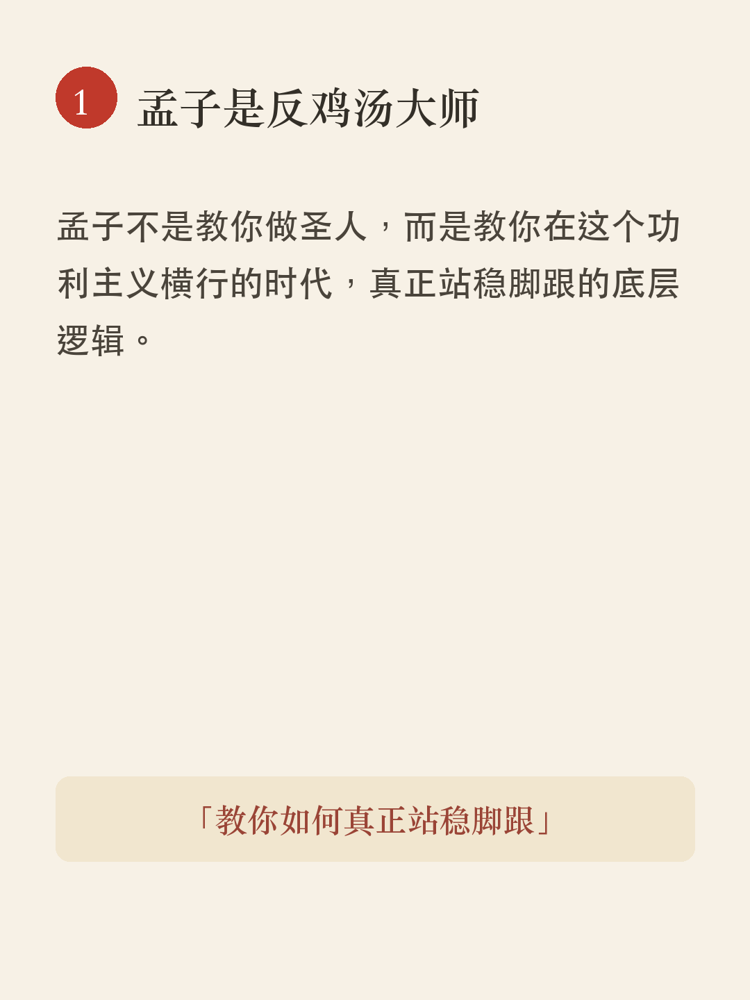
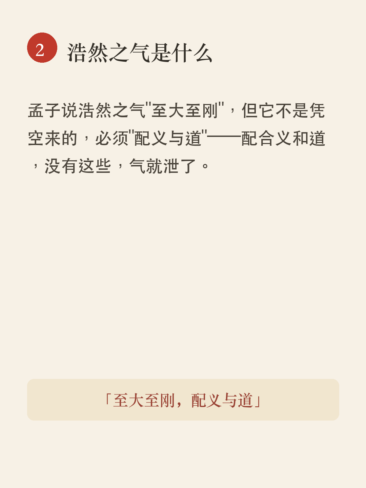
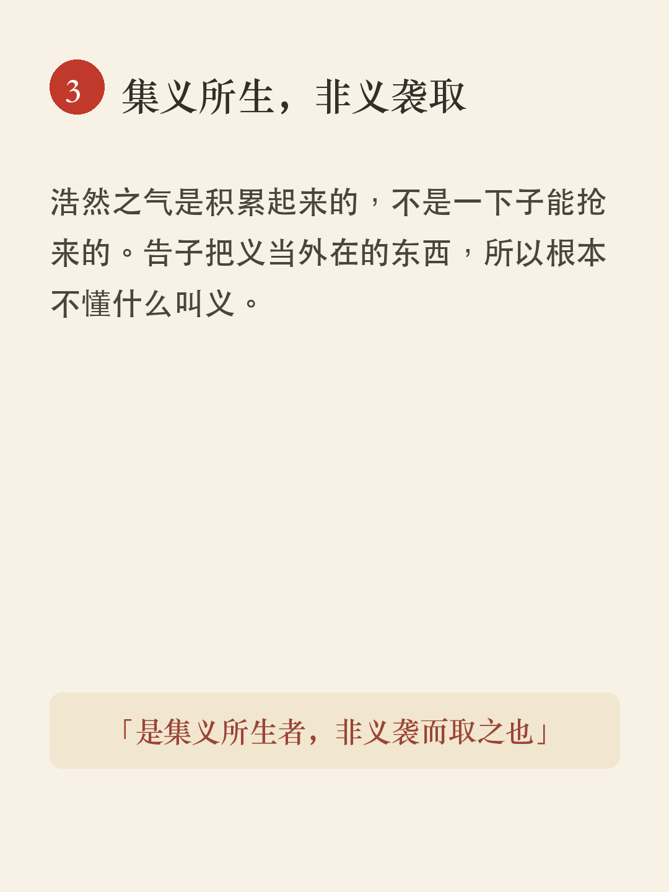
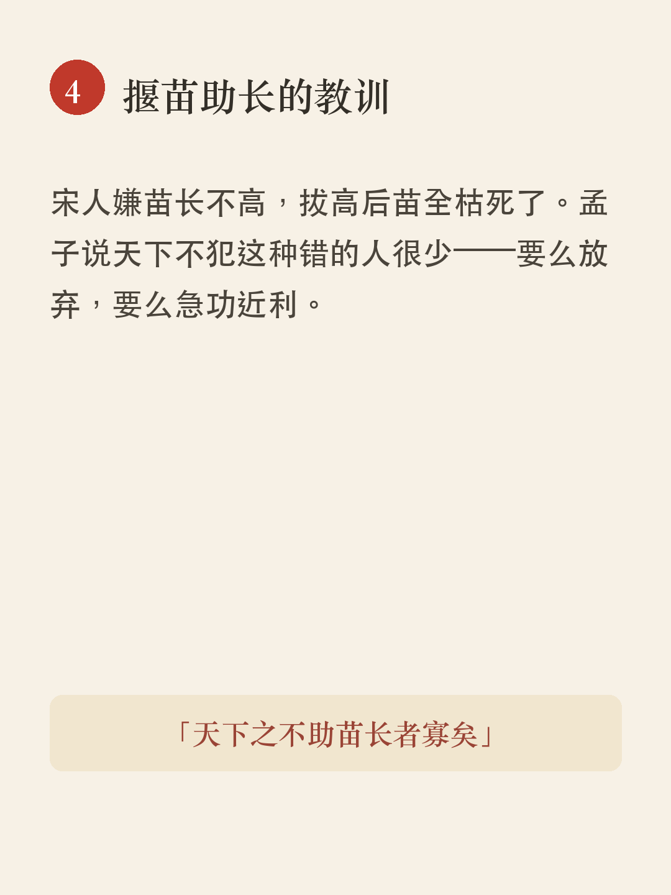
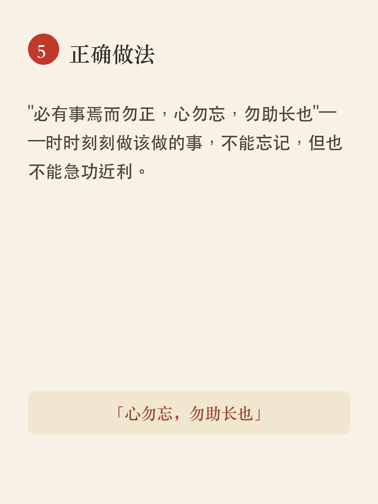
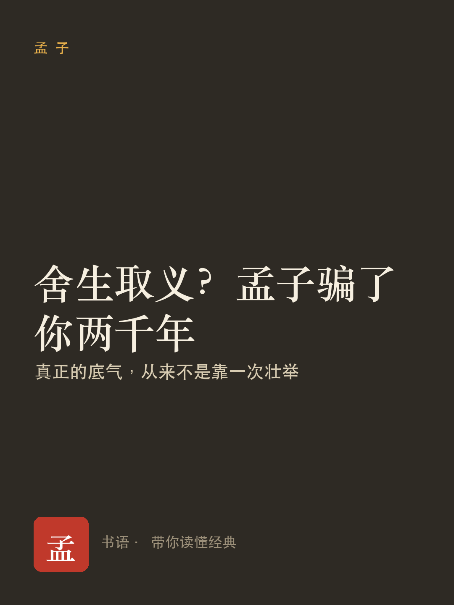
📄 配文·钩子（不剧透）
孟子说的"舍生取义"，99%的人都理解错了😱
他不是让你去送死，而是在讲一个扎心的真相——真正的底气，根本不是靠一次壮举撑起来的，是靠每天做该做的事，慢慢养出来的🔥
"集义所生，非义袭而取之也"——这12个字，就是孟子给功利主义时代的一记重锤⚡
别再问"有用吗"了。你的底气，来自日积月累💪口播稿全文
你知道吗？孟子其实是个“反鸡汤”大师。
他不是教你做圣人，而是教你如何在这个功利主义横行的时代里，真正站稳脚跟。
今天我要讲一个很多人没听懂的道理——浩然之气。
你以为孟子说的“舍生取义”是让你去送死吗？错了。孟子真正想说的是：真正的底气，不是靠一时冲动，而是靠日积月累的义举。
我们来读《孟子·公孙丑上》里这段话。公孙丑问：“敢问何谓浩然之气？”孟子说：“难言也。其为气也，至大至刚，以直养而无害，则塞于天地之间。其为气也，配义与道；无是，餒也。是集义所生者，非义袭而取之也。行有不慊于心，则餒矣。”
这段话什么意思？孟子说浩然之气“至大至刚”，但它不是凭空来的，它必须“配义与道”——配合义和道。没有这些，气就泄了，就馁了。
关键在最后这句——“是集义所生者，非义袭而取之也”。
孟子在这里专门批评了一种人，就是告子。他说“告子未尝知义，以其外之也”——告子根本不懂什么叫义，因为他把义当成外在的东西。
那什么才是对的？孟子说，浩然之气是“集义所生”，是积累起来的，不是一下子能抢来的。
这就像宋人揠苗的寓言——宋国有个人嫌自己的苗长不高，跑去把苗拔高了一大截，累得半死回到家，跟家里人说“今日病矣，予助苗长矣”。结果他儿子跑去一看，苗全枯死了。
孟子说“天下之不助苗长者寡矣”，天下不犯这种错误的人很少。要么觉得没效果就放弃了不做了，要么就是急功近利想走捷径。
那应该怎么做？孟子说“必有事焉而勿正，心勿忘，勿助长也”——你得时时刻刻做该做的事，不能忘记，但也不能急功近利。
所以你发现没有？孟子不是在教你做英雄，他是在教你建立真正的底气。
这个时代到处都是“有用吗”“做了有什么好处”的追问。孟子的回答是：你的底气不是靠一次壮举撑起来的，是靠每天做该做的事，慢慢养出来的。
“集义所生”四个字，就是孟子给功利主义时代的一记重锤——它告诉你，别想着走捷径，真正的底气，来自日积月累。
78旧版洞见scene公版✓ 判官过审五十步笑百步：你自己就是那个逃兵
🎬 梁惠王问孟子：我已经很努力了，为什么我的百姓不亲附？孟子说：五十步笑百步。你和邻国的国王没什么区别。
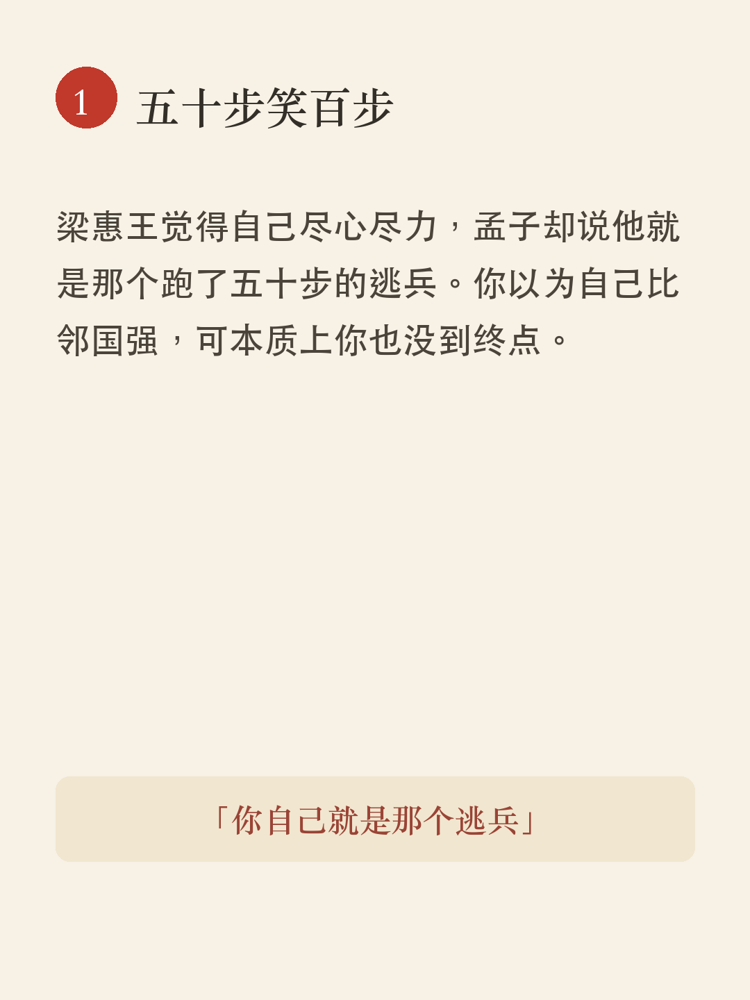
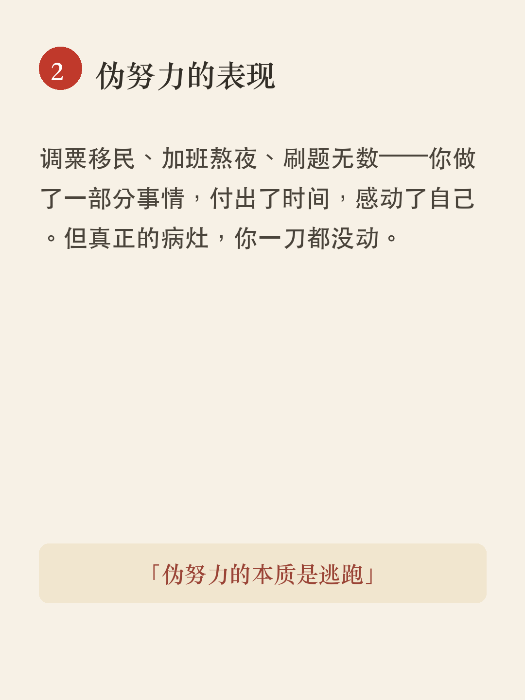
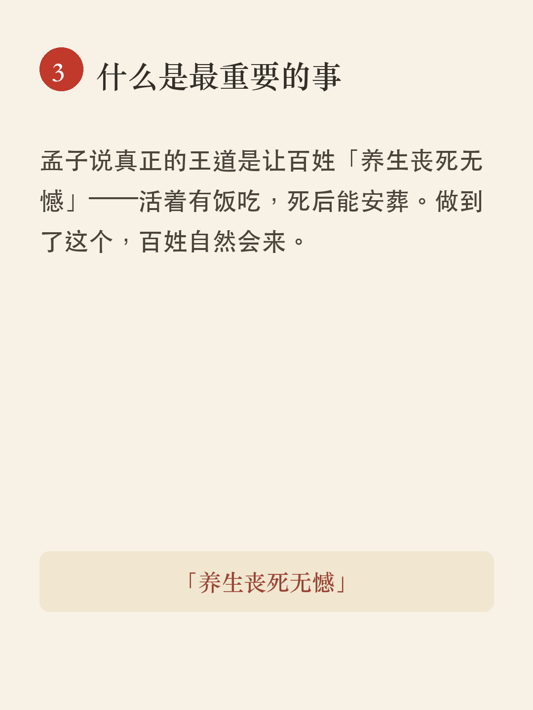
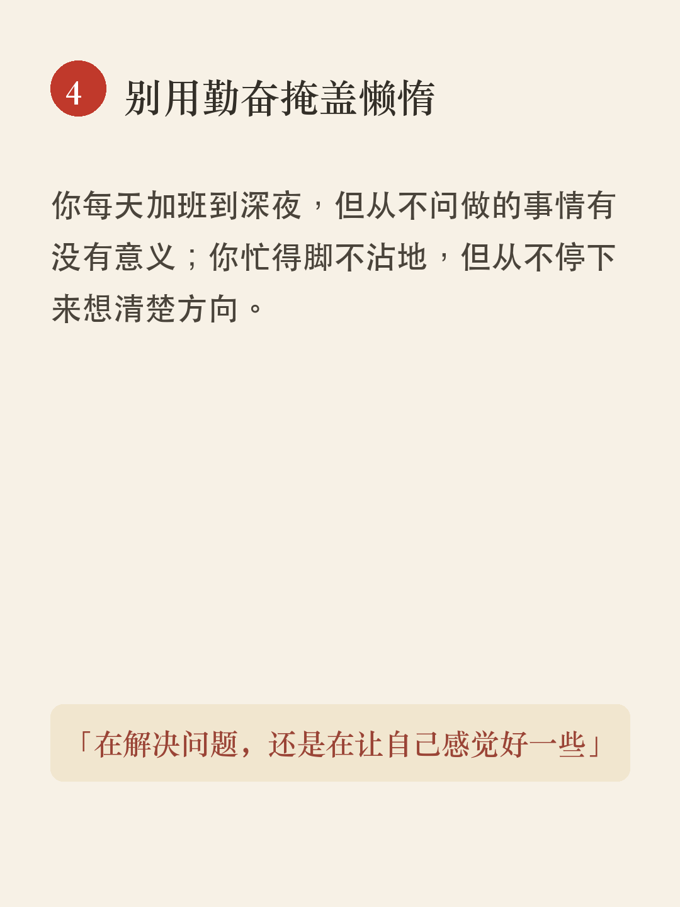
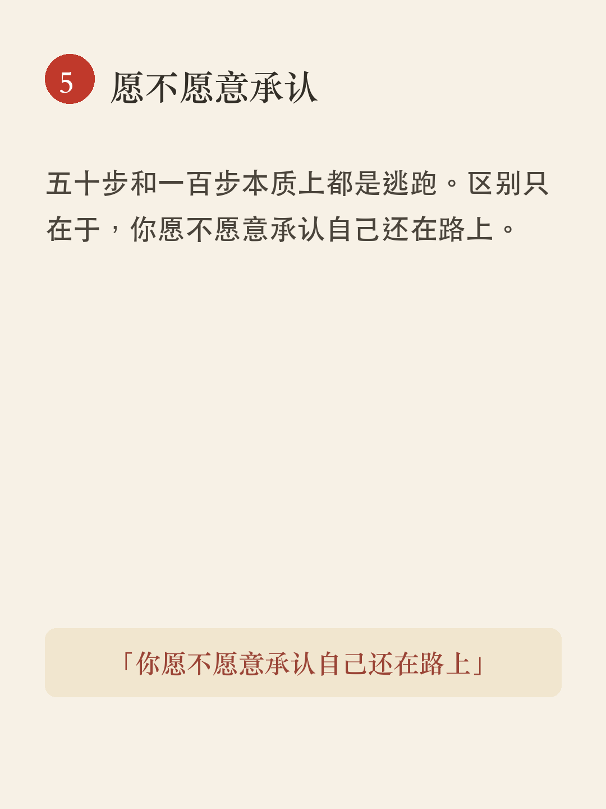
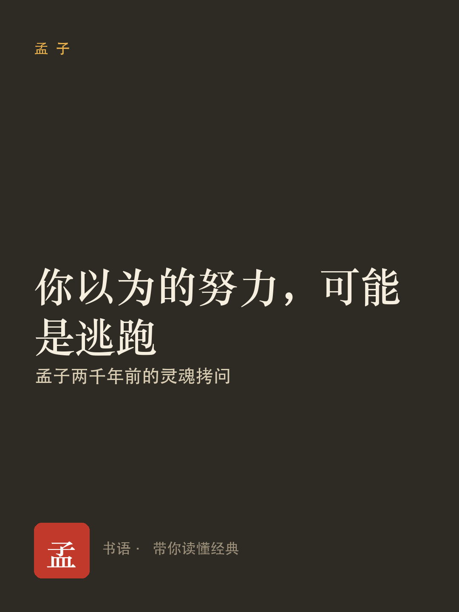
📄 配文·钩子（不剧透）
你以为自己在努力，其实你只是那个跑了五十步的逃兵。
梁惠王觉得自己尽心尽力，调粮移民灾后补救。但孟子说他就是那个逃兵——你调了粮，但没改变让人受灾的制度；你移民，但没解决让人流离失返的政策。你在边缘修补，你在末节努力，然后问：为什么结果没有质变？
这种人今天还少吗？你每天加班到深夜，但从不问做的事情有没有意义；你刷了一千道题，但从不总结规律。所以下次你觉得自己已经「尽力了」的时候，先别急着委屈。问自己：我做的，是那件最重要的事，还是最容易的事？口播稿全文
你以为自己在努力，其实你只是那个跑了五十步的逃兵。
梁惠王问孟子：我对国家已经很用心了。河内遭灾，我把百姓迁到河东，把粮食调到河内；河东遭灾，我也这么做。看看邻国的政治，没有谁比我更尽心。可为什么我的百姓没有增加，邻国的百姓也没有减少？
孟子没有直接反驳。他说：大王喜欢打仗，我用战争来比喻。两军交锋，鼓声响起，短兵相接，有人丢下盔甲、拖着兵器逃跑。有人跑了一百步停下来，有人跑了五十步停下来。那个跑了五十步的，嘲笑跑了一百步的——你觉得怎么样？
梁惠王说：不行，都跑了，只不过没跑到一百步而已。
孟子说：大王明白这个道理，就不要指望你的百姓比邻国多了。
这一段，很多人以为孟子只是在说"五十步笑百步，本质一样"。但如果你仔细读，会发现孟子其实在说一个更扎心的话——你以为你比邻国的国王强，但你自己就是那个逃兵。你没有资格嘲笑任何人，因为本质上，你也没到终点。
梁惠王觉得自己"尽心焉耳矣"——我太努力了，太用心了。但他所谓的用心是什么？是调粟移民，是灾后补救。孟子后面给了他真正的答案：真正的王道，是"不违农时，谷不可胜食也；数罟不入污池，鱼鳖不可胜食也；斧斤以时入山林，材木不可胜用也"。是让百姓"养生丧死无憾"——活着有饭吃，死后能安葬。然后才是教育、才是道德、才是"七十者衣帛食肉，黎民不饥不寒"。
梁惠王做了什么？他打仗。孟子一开头就说"王好战"。他一边打仗，一边灾后调粮，然后问：为什么我的百姓不增加？这就是五十步的逃兵，问一百步的逃兵：你为什么也没到终点？
更讽刺的是，孟子后面还说了一句：有人养的狗吃人的饭，不知道制止；路上有饿死的尸体，不知道开仓赈济。人死了，就说"不是我的错，是年景不好"。这和拿刀杀人，然后说"不是我杀的，是刀杀的"，有什么区别？
你看，这就是"伪努力"的终极形态——你做了一部分事情，你付出了时间，你感动了自己，但真正的病灶，你一刀都没动。你调了粮，但你没改变那个让人受灾的制度；你移民，但你没解决那个让人流离失返的政策。你在边缘修补，你在末节努力，然后问：为什么结果没有质变？
这种人今天还少吗？你每天加班到深夜，但从不问自己做的事情有没有意义；你刷了一千道题，但从不总结规律；你忙得脚不沾地，但从不停下来想清楚方向。你觉得你很努力，你觉得你应该被表扬，就像梁惠王觉得他"尽心焉耳矣"。但孟子隔着两千多年问一句：你的百姓，加多了吗？
所以"五十步笑百步"的真正教训，不是说五十步和一百步完全一样，一无是处。它的意思是：当你嘲笑别人的时候，先照照镜子。你没有解决问题，你只是在缓解自己的焦虑；你没有做最重要的事，你只是在最容易的地方消耗自己。孟子没有否定调粟移民的价值，就像他没有否定跑了五十步比跑了八十步好一点点。但他告诉梁惠王：你别拿这个来安慰自己，别拿战术上的修补，掩盖战略上的懒惰。
真正的差距，不是你和邻国国君谁更尽心。真正的差距是：你有没有做那件最重要的事——让百姓"养生丧死无憾"，让他们有恒产、有恒心、有安全感、有希望。做到了这个，百姓自然会来；做不到，调再多粟、移再多民，都是在逃兵的路上，继续往回看。
所以下次你觉得自己已经"尽力了"的时候，先别急着委屈。问自己一个问题：我做的，是那件最重要的事，还是最容易的事？我是在解决问题，还是在让自己感觉好一些？
五十步和一百步，本质上都是逃跑。区别只在于，你愿不愿意承认自己，还在路上。
78旧版映照scene公版✓ 判官过审生于忧患死于安乐：你的低谷可能是天将降大任
🎬 孟子说，天将降大任于斯人也，必先苦其心志，劳其筋骨。这话听起来像是给失败者的安慰剂，但它可能是真的。
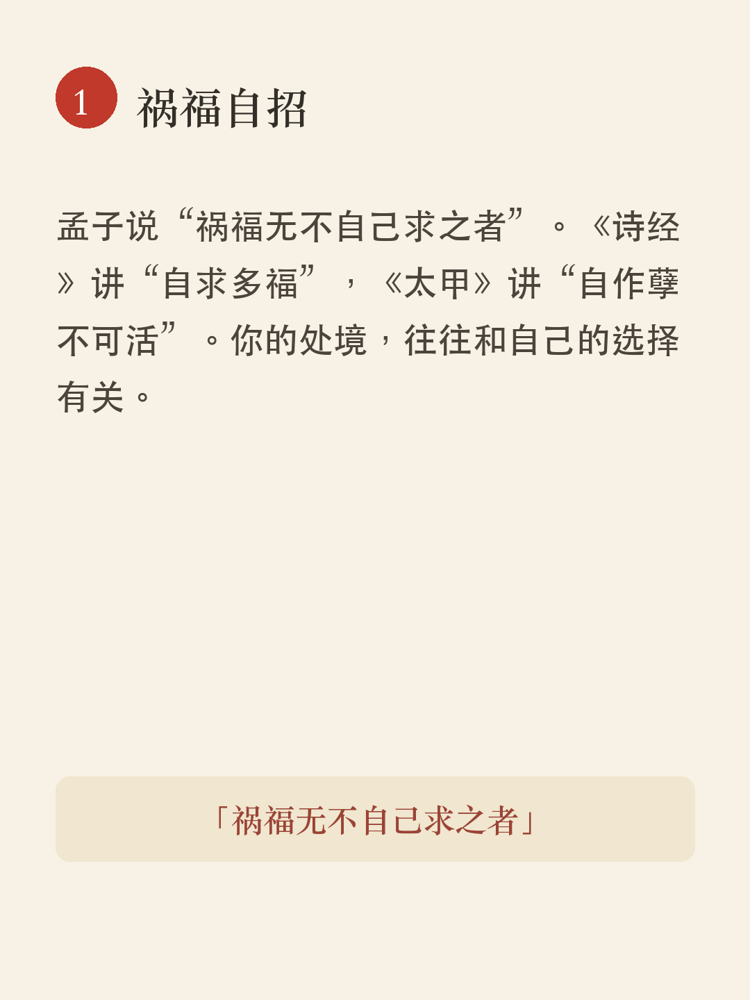
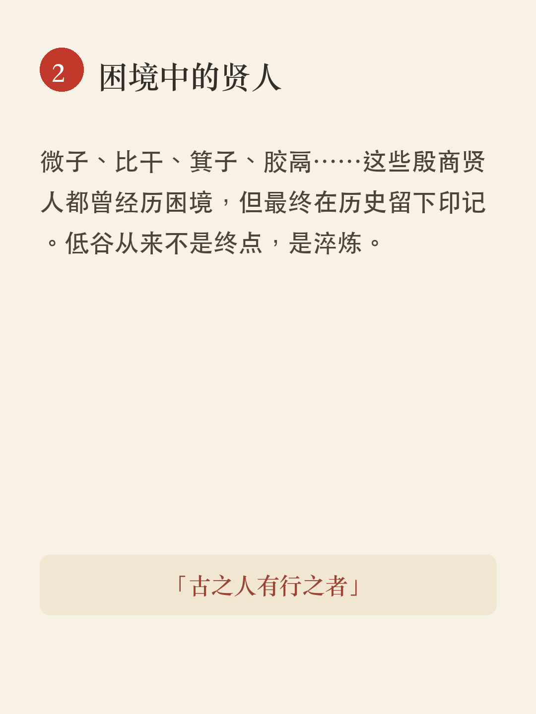
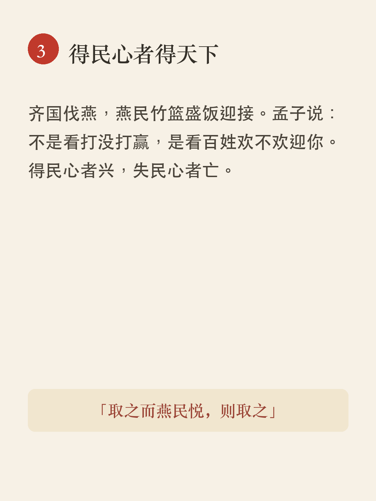
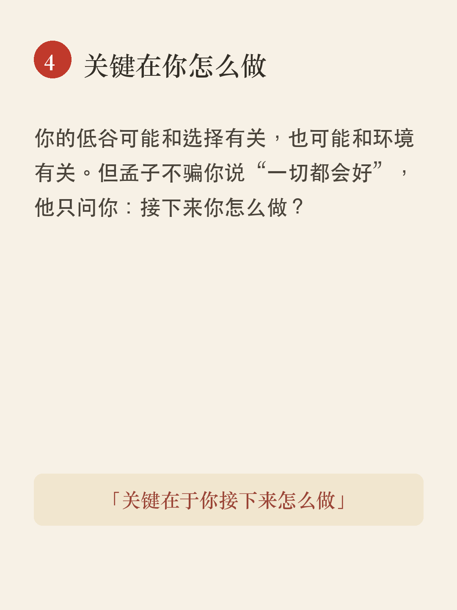
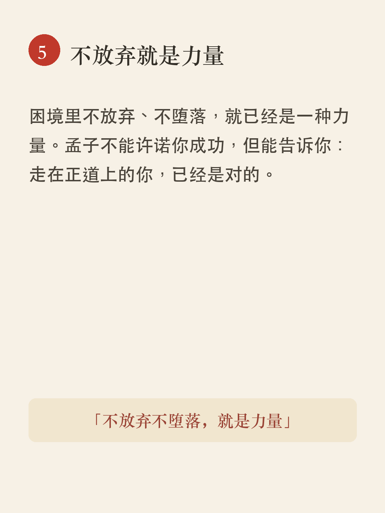
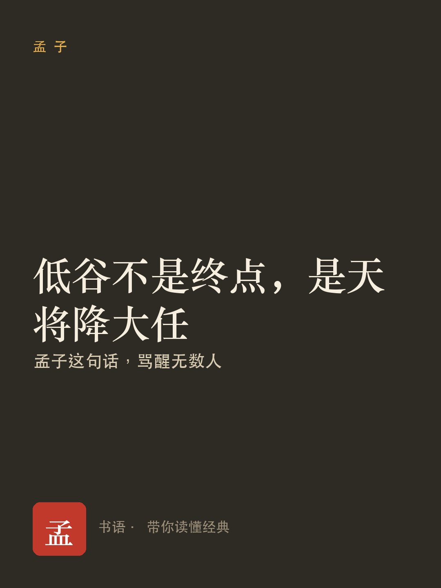
📄 配文·钩子（不剧透）
孟子有句话叫“祸福无不自己求之者”。
你可能觉得是心灵鸡汤，但他是在讲一个反复观察到的规律。
行仁政，国家就兴盛；怠慢享乐，灾祸就降临。这不是宿命，是你选择的结果。
那些在困境里还能坚持仁义、还能反思改过的人，才能成就一番事业。
所以你现在快撑不住的时候，别急着否定自己。孟子不会骗你说一定出头，但他能告诉你：在困境里不放弃、不堕落，就已经是一种力量了。口播稿全文
孟子有一句话，叫“祸福无不自己求之者”。这话什么意思？灾祸和福气，没有不是自己招来的。
你可能觉得这是心灵鸡汤。但孟子不是在安慰你，他是在说一个他反复观察到的规律。
《诗经》里说“永言配命，自求多福”，《太甲》里也说“天作孽，犹可违；自作孽，不可活”。灾祸，往往是自己招来的。
但孟子说的不是宿命论。他观察到的是：一个国家行仁政、尊贤任能，国家就兴盛；一个国家怠慢政事、贪图享乐，灾祸就降临——这祸福，都是自己招来的。
所以你现在的处境，可能和你自己的选择有关，也可能和外部环境有关。但关键在于：你接下来怎么做。
孟子的文章最厉害的地方，是他不仅讲道理，还讲具体的历史案例。
他观察过很多历史人物，发现有些人并不是一帆风顺的，但他们最终成就了大事。公孙丑上里就提到过一些例子：微子、微仲、王子比干、箕子、胶鬲，这些都是殷商时代的贤人。他们经历过困境，但最终在历史中留下了自己的印记。
但孟子的论述最深刻的地方，是梁惠王下里关于齐国和燕国的案例。
齐国打燕国，打赢了。齐宣王问孟子：要不要取燕国？
孟子怎么回答？他说：“取之而燕民悦，则取之。古之人有行之者，武王是也。取之而燕民不悦，则勿取。古之人有行之者，文王是也。”
什么意思？古代圣王取天下，不是看自己打赢了没有，而是看那里的人民欢不欢迎你。你打下来了，燕国百姓高兴，你就取；不高兴，你就撤。
齐国以万乘之国伐万乘之国，燕国百姓用竹篮盛饭、用壶盛水来迎接齐军。他们在迎接什么？只是在躲避水深火热的处境。如果齐国的统治让他们过得更苦，这局面也会反过来。
后来燕国果然出了问题。燕王虐待百姓，齐王去征伐。孟子说：燕国百姓以为齐国会拯救他们，所以欢迎齐军。但如果齐军杀害他们的父兄，囚禁他们的子弟，毁坏他们的宗庙，搬走他们的重器，那又怎么可以呢？
孟子接着说了一句非常重的话：现在天下诸侯本来就畏惧齐国的强大。如果齐国扩大了领土却不行仁政，这就是在挑动天下诸侯的兵戈。
所以你再想想你现在正在经历的难处。
你现在可能是被老板骂了，可能是项目黄了，可能是感情出了问题，可能是对未来完全迷茫。孟子这个人很诚实，他不会骗你说“一切都会好的”。他只是告诉你：你现在的处境，可能和你自己的选择有关，也可能和外部环境有关。但关键在于：你接下来怎么做。
孟子观察到的规律是：人往往在困境里才能真正看清自己，才能真正成长。那些在困境里还能坚持仁义、还能反思改过的人，才能成就一番事业。而那些在安逸里失去警觉、忽视民心的人，最终会走向衰败。
这不代表你的困境一定有回报。孟子不是算命先生，他不保证你扛过去就一定出头。但他能告诉你的是：如果你在困境里保持清醒、坚守正道、不断反思，你就已经走在正确的道路上了。
所以下次你觉得自己快撑不住的时候，别急着否定自己。仔细审视自己的处境，思考有没有需要修正的地方，有没有可以坚持的仁义之道。孟子不会许诺你一定能成功，但他能告诉你：一个人，在困境里不放弃、不堕落，就已经是一种力量了。
74旧版洞见scene公版✓ 判官过审孟子vs告子：人性到底是白纸还是种子？
🎬 如果我告诉你，孟子认为善良不是教出来的，而是你天生就有的——你会信吗？
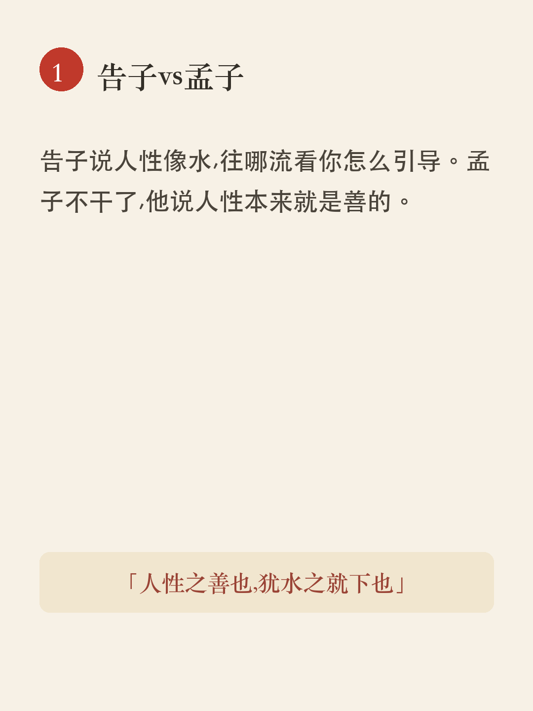
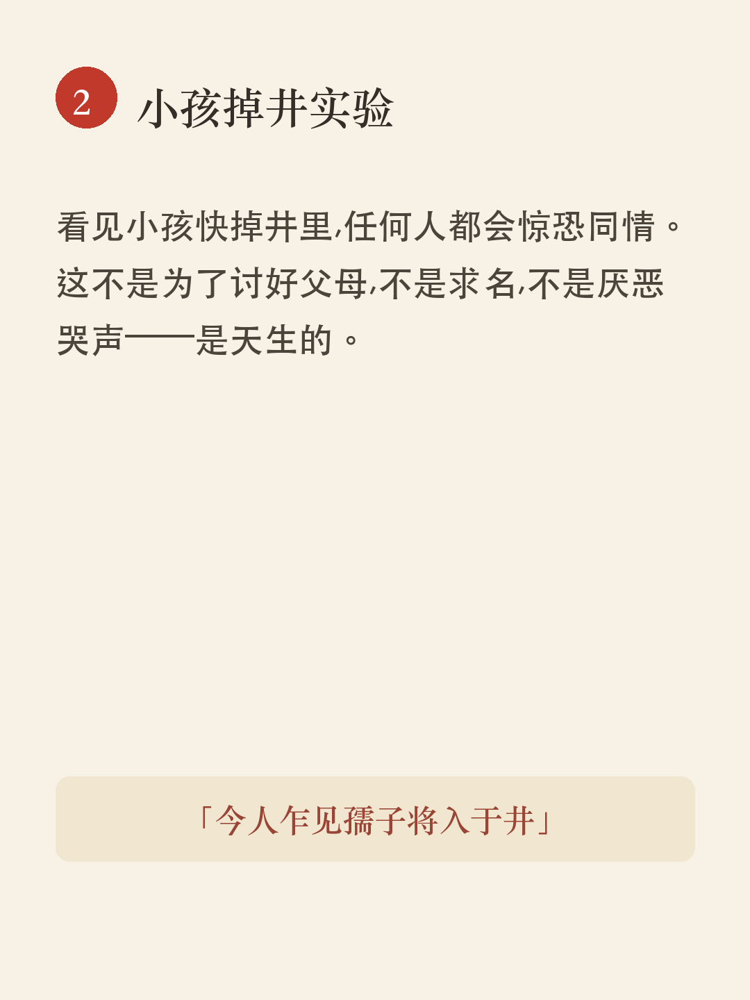
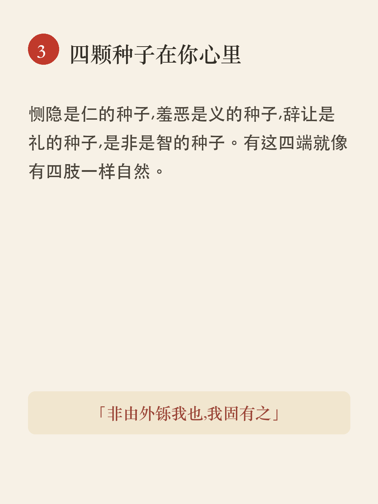
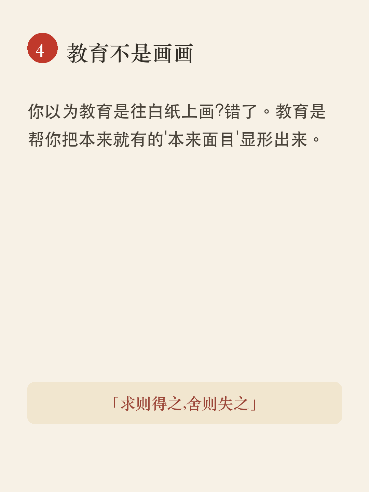
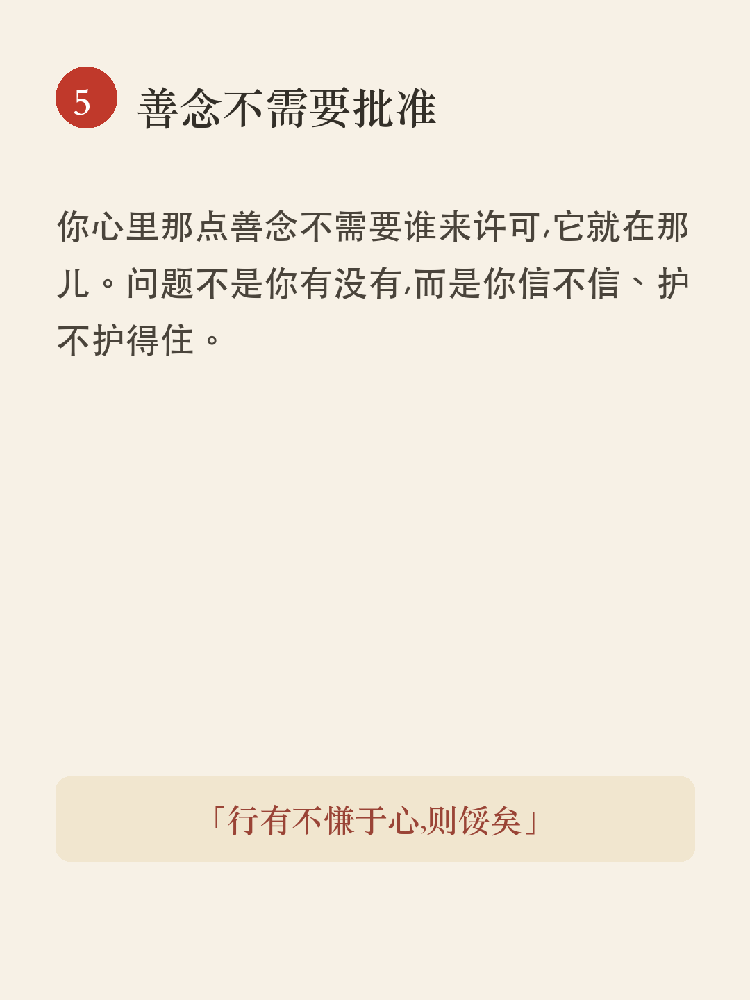
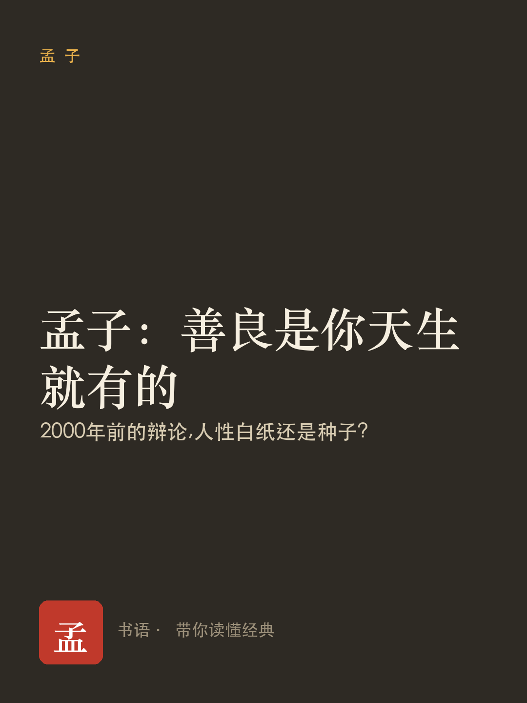
📄 配文·钩子（不剧透）
孟子说善良不是教出来的,是你天生就有的。
告子觉得人性像白纸,往哪引导你就是什么样。但孟子不认,他用「小孩掉井」的故事告诉我们:看见危险你会本能地心疼,这不是算计,这是你本来就有的「不忍人之心」。
恻隐、羞恶、辞让、是非——这四颗种子就在你心里。教育不是往白纸上画画,而是帮你的「本来面目」显形。
所以别再说「我做不到」了,有这四端却说自己不行,孟子说那是自己害自己。口播稿全文
如果我告诉你，孟子认为善良不是教出来的，而是你天生就有的——你会信吗？
今天咱们聊一个2000年前的思想辩论，主人公是孟子，对手叫告子。
告子是谁？他是与孟子同时期的一位辩者，但思想完全不一样。告子认为，人性无所谓善恶，就像水往哪边流，要看你往哪边引导。这种观点近似后世“性无善无不善”或“白板”的理解——当然，这是现代类比，告子本人未必用这个说法。
但孟子不同意。孟子主张“性善”，他的核心论据是：人皆有“不忍人之心”。他举例说，现在有人忽然看见一个小孩快要掉进井里，都会产生惊惧和同情之心——这不是因为想讨好孩子的父母，不是为了在乡里朋友面前求名，也不是因为厌恶孩子的哭声才这样。孟子由此推论：没有恻隐之心，就不算人；没有羞恶之心、辞让之心、是非之心，也都不算人。恻隐之心是仁的开端，羞恶之心是义的开端，辞让之心是礼的开端，是非之心是智的开端。人有这四端，就像有四肢一样自然。有这四端却说自己做不到，那是自己害自己。
你看，孟子的逻辑是：善不是外部强加给你的，而是你内心本来就有的东西。教育重要不重要？当然重要，孟子也强调教化。但他的底层逻辑不一样：教育不是往白纸上画画，教育是帮你的“本来面目”显形。
这个观点放到今天也一样值得琢磨——我们总说原生家庭、说环境塑造，但孟子提醒你：你心里那点善念，不需要谁来批准，它就在那儿。问题不是你有还是没有，而是你信不信、护不护得住它。
72旧版映照scene公版✓ 判官过审孟子说"不孝有三无后为大"——今天还要信吗？
🎬 孟子说，不孝有三，无后为大。这句话在今天，被很多人骂成糟粕。但孟子说这话的本意，你可能误会了。
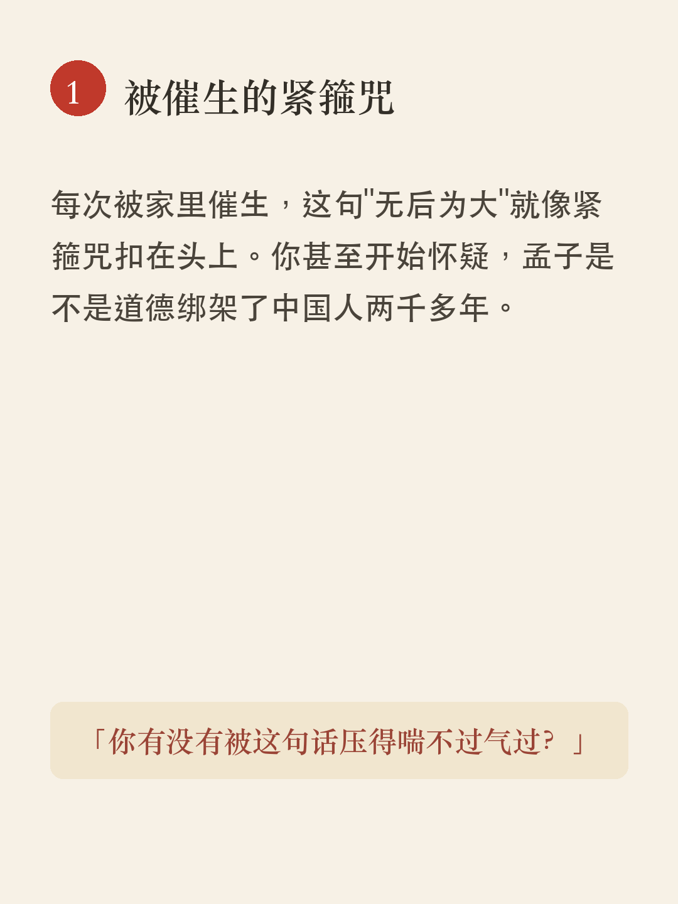
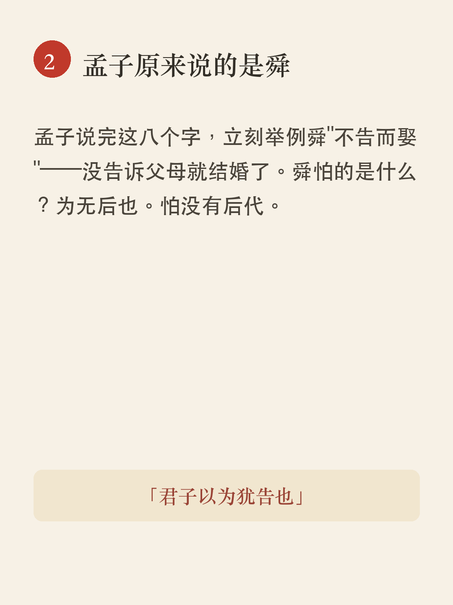
📄 配文·钩子（不剧透）
你有没有被"无后为大"这四个字压得喘不过气过？每次被催生，这句话就像紧箍咒一样。但今天我要告诉你，你可能真的冤枉孟子了。孟子原话说的是舜的故事——他不是要道德绑架，是在说"为无后"这个动机正当，就可以变通。可这话传了两千年，传着传着就变味了，变成了对女性的道德绑架，变成了家庭聚餐上最难听的话。你要知道的：你面对的不是孟子的意思，是两千多年层层加码的曲解。口播稿全文
你有没有被这句话压得喘不过气过？
"不孝有三，无后为大。"
每次被家里催生，每次有人问你什么时候要孩子，这句话就像紧箍咒一样扣在头上。你甚至开始怀疑，孟子是不是在道德上绑架中国人两千多年。
但今天我要告诉你，你可能真的冤枉孟子了。
我们来读孟子自己怎么说的。原话就八个字："不孝有三，无后为大。"说完这八个字，孟子立刻给了个例子——舜。
他说舜"不告而娶"，就是没告诉父母就结婚了。舜怕的是什么？"为无后也"——怕的就是没有后代。
但这里有个细节你注意过没有？舜的爹是谁？瞽瞍。历史上有名的混蛋爹。舜知道告诉了也没用，告诉他也娶不成。那怎么办？孟子说"君子以为犹告也"——君子认为，舜这样做，等于是告诉了。
为什么？因为舜的出发点是"为无后"，是为了把家族传承下去，这个动机是正当的。
好，我们拆解一下孟子在这里到底想说什么。
他不是说"你必须生儿子，否则就是不孝"这么粗暴的话。他是在讲一个判断：众多不孝的行为里，没有后代是最严重的一种。为什么严重？因为在那个宗法社会里，一个人的身份、财产、祭祀、姓氏，全都绑定在"后"上。没有后代，等于这个人的一切在他这代就断了，这叫"绝"。
但孟子同时给了另一个信息：即便不告而娶这种在当时看起来违礼的行为，只要你"为无后"这个动机是正当的，君子也能理解，甚至认为你做得对。
这两点合在一起，才是孟子的完整意思——"无后"是大事，但"为无后"的处境下，具体做法可以变通。舜是被迫无奈，不是故意忤逆。
可这话传了两千多年，传着传着就变味了。变成了"不生男孩就是最大的不孝"，变成了对女性的道德绑架，变成了家庭聚餐上最难听的那句话。我们现在骂孟子是糟粕，可孟子自己根本没说过那些话。
今天被催生的你、被"无后为大"这四个字压得喘不过气的你，你要知道，你面对的不是孟子的意思，是两千多年层层加码的曲解。
那孟子的本意能给我们什么启发？
"无后为大"里那个"大"字，其实可以拆开两层来看。一层是物质的、血脉的"后"，这个你懂的。另一层是精神的、价值的"后"——你有没有什么德行、有什么志业、有什么东西，是值得传下去的？是一份手艺、一种态度、还是一个家庭的精神气质？
你的孩子不一定要成龙成凤，但你能不能把一样东西真正传给他？这，才是孟子那句话里，真正值得你认真对待的"大"字。
68旧版映照scene公版✓ 判官过审孟子两千年前的预言：谈利的公司最早崩
🎬 孟子见梁惠王，开口第一句话就怼利——上下交征利而国危矣。这话放到今天，简直就是给所有老板的一记耳光。
📄 配文·钩子（不剧透）
孟子两千三百年前就看清了一个可怕真相：只谈利的组织，一定死于内部争夺。老板谈利润，员工盯KPI，中层顾小算盘，基层想多拿少干——所有人互相争夺、互相算计，表面有钱规模不小，其实已开始从内部腐烂。而真正走得远的公司，老板都愿意先吃亏、让利。上下交征利而国危矣，这句话值得每个管理者反复品。口播稿全文
你知道吗，两千三百年前，孟子见梁惠王，梁惠王开口第一句话问的是什么？
“亦将有以利吾国乎？”——你能给我什么好处？
结果孟子直接怼回去：“王何必曰利？亦有仁义而已矣。”
你以为孟子是书呆子清高？不是。他是看穿了一个可怕的逻辑。
他说：如果王开口谈利，大夫就跟着谈利，士人百姓也只想着利自己——上下交征利而国危矣。
这句话什么意思？就是从国王到扫地的，所有人都围着利益转，整个组织从上到下互相争夺资源，你觉得这个公司、这个国家还能撑多久？
孟子接着说了一句更狠的：万乘之国，弑其君者必千乘之家；千乘之国，弑其君者必百乘之家。
大鱼吃小鱼，小鱼吃虾米。不是因为别人有多坏，而是因为大家都把利放在义前面了——不抢到手就永远不会满足。
反过来，孟子说：未有仁而遗其亲者也，未有义而后其君者也。
一个人讲仁义，他不会抛弃自己的亲人；一个组织讲道义，它不会背叛自己的员工和客户。
你发现没，这不就是现在的职场吗？
老板只谈利润，员工就只盯着KPI。中层只顾自己部门的小算盘，基层只想着怎么多拿一点、少干一点。整个公司从上到下，所有人都在“交征利”——互相争夺，互相算计，互相防备。
这样的公司，表面上看账上有钱、规模不小，但其实已经开始从内部腐烂了。因为没有人真正为公司负责，每个人都在等别人先付出，自己先收割。
而那些真正走得远的公司，你会发现它们的老板往往有一种“傻气”——愿意吃亏，愿意让利，愿意先谈我能给团队什么，而不是团队能给我什么。
这不是道德说教，这是孟子在两千三百年前就看透的组织生死逻辑：只谈利的组织，最后一定死于内部的争夺；先谈义的组织，反而能聚住人心、聚住资源。
所以回到那句原话：上下交征利而国危矣。
一个组织从上到下都在争夺利益的时候，它的崩溃不是意外，是必然。